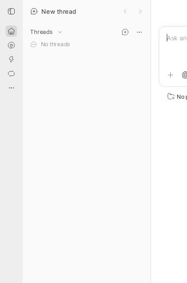
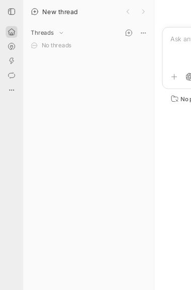
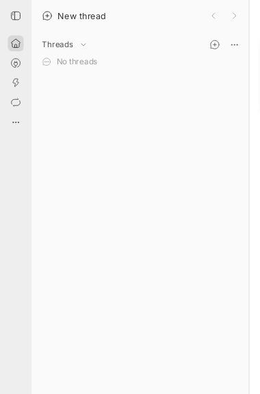
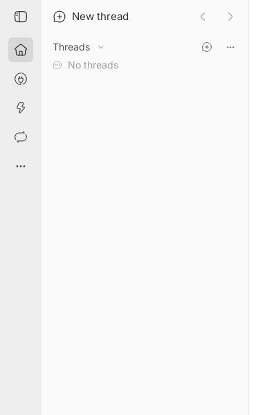

#7593 · Sidebar resize ignores touch input
Verdict: REPRODUCED · Root-cause confidence: high · Reproduction label: confirmed-repro.
1. TL;DR
The wide left sidebar has a working mouse resize path but no matching touch resize path. In a real Chromium browser, dragging its edge 60 pixels with touch leaves the sidebar at 320 pixels; the same mouse drag changes it to 380 pixels and saves that width. Below the compact-layout breakpoint, the drawer instead uses a fixed viewport-derived width and hides the shared resize handle. Both behaviors repeated against a second clean trusted checkout and fresh development store. This is a left-sidebar input and presentation gap, not evidence of data loss.
2. Claims vs findings
| Claim | Status | Evidence |
|---|---|---|
| Touch cannot resize the wide sidebar. | Verified | CDP touchStart/touchMove/touchEnd: 320 → 320 pixels, in two source checkouts. |
| Mouse input still resizes and persists width. | Verified | Same coordinates: 320 → 380 pixels; local storage becomes 380. Positive-control unit case passes. |
| The compact drawer is fixed-width with no usable edge handle. | Verified | At 430 pixels, width remains 360 pixels after touch drag; handle computes to display:none. CSS variable is min(86vw, 360px). |
| The thin edge is hard to discover without hover. | Verified in source | 12-pixel target, transparent resting pseudo-element, hover-only border highlight. Physical-device discoverability was not user-tested. |
| The same behavior occurs in the native iOS app and desktop release. | Unverified | No native iOS device, simulator, or packaged desktop release was tested. Browser evidence is source Chromium only. |
| The right-side panels do not have this problem. | Unverified | Right-panel touch behavior is outside this reproduction. |
3. Environment
- Linux 4.19.0-gvisor; Node v22.19.0; frozen pnpm workspace install; Chromium headless shell 131.0.6778.204 through BB Browser Automation.
- Two detached worktrees at the exact base commit:
$WORK/baseand$WORK/verify. The second was checked clean before applying only the independently authored test patch below; production code stayed unchanged. - First isolated instance: app/server/daemon ports 14777/22777/30777. Second isolated instance: 15067/23067/31067. Each uses a distinct fresh checkout-derived development data directory. No production store, imported store, or existing user browser profile was used.
- Viewports: 1000×800 and 430×800; touch emulation enabled. No provider turns were started.
- The first whole-workspace build hit an SDK output-order problem; explicitly building the SDK and retrying the normal Turbo build passed all 74 tasks. No source or dependency manifest was changed to resolve setup.
4. Minimal reproduction
- Check out the recorded public main commit and run the frozen install. Build the SDK first, then the normal workspace build.
- In a fresh detached checkout, launch the source development app with
pnpm dev. Use its printed app port and a new checkout-derived store; do not reuse a production data directory. - Open a clean browser page at 1000×800 with touch support. Locate
[data-testid="app-sidebar-resize-handle"]. Its initial box is x=313..325, width=12; the sidebar is 320 pixels wide. - Send a touch drag from (319,250) to (379,250). Read the panel's bounding-box width and local storage. Then send a mouse drag over the same coordinates.
- Switch to 430×800, open the sidebar using its normal toggle, and wait for
data-state="open". Drag the edge from (358,250) to (408,250). Read the panel width and the resize handle's computed display value.
Expected: touch updates the wide sidebar width and saves the new value, like mouse input.
Actual first browser run:
before { width: 320, stored: null }
after-touch { width: 320, stored: null }
after-mouse { width: 380, stored: '380' }
compact-before { width: 360, open: 'open', handles: [ 'none' ] }
compact-after { width: 360, open: 'open', mobileWidth: 'min(86vw, 360px)' }
The compact check verifies the absence of resize behavior, not that an arbitrary preferred width or gesture design already exists.
Real browser captures
These are actual source-app screenshots, cropped only to the sidebar and its immediate edge for privacy. Wide captures are scaled to 96%; use the DOM measurements above for CSS-pixel widths.




Complete focused regression patch
Save the following block as /tmp/sidebar-touch-regression.patch and apply it at the recorded commit. It replaces the existing fake resize handle with the real production handle and adds mouse/touch cases to the real AppLayout width/persistence harness. Other expensive application services retain the existing test fixtures. It introduces no production seam or dependency.
diff --git a/apps/app/src/components/layout/AppLayout.test.tsx b/apps/app/src/components/layout/AppLayout.test.tsx
index fc1bef9c43..81abcf9dcb 100644
--- a/apps/app/src/components/layout/AppLayout.test.tsx
+++ b/apps/app/src/components/layout/AppLayout.test.tsx
@@ -66,6 +66,9 @@ vi.mock("./AppLayoutSidebar", async () => {
const { Sidebar } = await vi.importActual<
typeof import("@/components/ui/sidebar")
>("@/components/ui/sidebar");
+ const { SidebarResizeHandle } = await vi.importActual<
+ typeof import("@/components/sidebar/SidebarChrome")
+ >("@/components/sidebar/SidebarChrome");
return {
AppLayoutSidebar: ({
onResizeMouseDown,
@@ -74,7 +77,11 @@ vi.mock("./AppLayoutSidebar", async () => {
}) => (
<Sidebar>
<div data-testid="sidebar-body">App sidebar</div>
- <div data-testid="resize-handle" onMouseDown={onResizeMouseDown} />
+ <SidebarResizeHandle
+ testId="resize-handle"
+ isResizing={false}
+ onMouseDown={onResizeMouseDown}
+ />
</Sidebar>
),
};
@@ -578,6 +585,39 @@ describe("AppLayout sidebar resize drag", () => {
});
}
+ it.each(["mouse", "touch"] as const)(
+ "persists a resize from the real handle using %s input",
+ (input) => {
+ window.localStorage.setItem(SIDEBAR_WIDTH_STORAGE_KEY, "320");
+ renderLayout();
+ const handle = screen.getByTestId("resize-handle");
+ if (input === "mouse") {
+ fireEvent.mouseDown(handle, { clientX: 320 });
+ fireEvent.mouseMove(window, { clientX: 360 });
+ } else {
+ fireEvent.touchStart(handle, {
+ touches: [{ identifier: 1, clientX: 320, clientY: 100 }],
+ });
+ fireEvent.touchMove(window, {
+ touches: [{ identifier: 1, clientX: 360, clientY: 100 }],
+ });
+ }
+ flushFrames();
+ if (input === "mouse") {
+ fireEvent.mouseUp(window);
+ } else {
+ fireEvent.touchEnd(window, {
+ touches: [],
+ changedTouches: [{ identifier: 1, clientX: 360, clientY: 100 }],
+ });
+ }
+ expect(widthVar(document.querySelector('[data-sidebar="panel"]'))).toBe(
+ "360px",
+ );
+ expect(window.localStorage.getItem(SIDEBAR_WIDTH_STORAGE_KEY)).toBe("360");
+ },
+ );
+
it.each(SECONDARY_ROUTES)(
"finishes resizing before Escape can leave %s",
(route) => {
git apply /tmp/sidebar-touch-regression.patch pnpm exec turbo run test --filter=@bb/app -- --run src/components/layout/AppLayout.test.tsx -t 'persists a resize from the real handle'
PASS persists a resize from the real handle using mouse input FAIL persists a resize from the real handle using touch input AssertionError: expected '320px' to be '360px' Test Files 1 failed (1) Tests 1 failed | 1 passed | 30 skipped (32)
The assertion is deliberately red on unchanged production code. It checks the resulting layout width and saved user preference, not handler names or source strings.
5. Root cause
SidebarResizeHandle accepts a React mouse event and attaches only onMouseDown. It renders with hidden ... md:block, a 12-pixel target and a transparent edge unless hovered or actively resizing.
onMouseDown: (event: ReactMouseEvent<HTMLDivElement>) => void;
...
onMouseDown={onMouseDown}
AppLayout resize owner starts the resize from that mouse callback, records the starting x/width, and listens for window mousemove/mouseup. Touch streams never establish that resize session or update its live width. The positive mouse control proves width measurement, clamping and persistence work for the supported input path.
window.addEventListener("mousemove", handleMouseMove);
window.addEventListener("mouseup", finishSidebarResize);
The compact layout is a separate width path: fixed mobile-width definition, mobile-width style binding, and compact drawer panel bind --sidebar-width-mobile to min(86vw, 360px). Desktop width persistence does not change it. The compact panel already has swipe-to-dismiss handling; that is not a resize interaction.
6. Proposed fix and automation scope
A complete repair should unify the wide resize interaction around pointer events, track the initiating pointer, prevent browser panning on the hit target, and finish safely on release, cancellation, Escape and blur. Coarse-pointer affordance and hit testing need deliberate treatment. Compact resizing must explicitly define width bounds, persistence/reset behavior and precedence over swipe-to-dismiss before adding an edge control.
No automated fix PR: a consistent mouse-to-pointer contract rename already crosses eight production files: SidebarChrome.tsx, AppLayout.tsx, AppLayoutSidebar.tsx, routeSidebar.tsx, AppSidebar.tsx, SectionSidebar.tsx, ResourceSidebar.tsx, and SettingsSidebar.tsx, before regression coverage or compact-drawer changes. This exceeds the five-file simple-fix limit. The gate stops before production implementation; no fix branch was pushed. Keeping stale mouse-named contracts or synthesizing mouse events would evade, rather than satisfy, that limit.
7. Linked pull request
PR #7594 was closed and unmerged when checked. Its metadata and diff were read only as untrusted review material, after the regression test and reproductions were authored. Static inspection shows a broader pointer-event migration plus a compact drawer resizing proposal across 18 files. That direction addresses the identified categories, but this report does not approve or validate that implementation. Its branch was never checked out, built or tested. No open PR linked to this issue was found.
8. Verification — second clean run by the same agent
A second detached checkout at the recorded main commit was verified clean, independently installed with the frozen lockfile, and given only the same authored regression patch. The exact Turbo command above again produced one passing mouse case and one failing touch case, with 320px received instead of 360px. This is a repeat by the same investigator, not an independent agent review.
A second source instance used fresh ports 15067/23067/31067, a distinct fresh store and a new browser page/origin. The complete repeatable Browser Automation script is below. The first navigation timed out during development startup; the same page was then allowed to finish loading before rerunning the measurement script.
const page = await browser.getPage("verification");
await page.setViewport({ width: 1000, height: 800, isMobile: false, hasTouch: true });
if (!page.url().includes(":15067")) await page.goto("http://127.0.0.1:15067", { waitUntil: "domcontentloaded", timeout: 60000 });
await page.waitForSelector('[data-testid="app-sidebar-resize-handle"]');
const cdp = await page.createCDPSession();
await cdp.send("Emulation.setTouchEmulationEnabled", { enabled: true, maxTouchPoints: 1 });
const measure = () => page.evaluate(() => ({
width: document.querySelector('[data-sidebar="panel"]').getBoundingClientRect().width,
stored: localStorage.getItem("bb.sidebar.width"),
}));
console.log("second-wide-before", await measure());
await cdp.send("Input.dispatchTouchEvent", { type: "touchStart", touchPoints: [{ x: 319, y: 250 }] });
for (const position of [329, 339, 349, 359, 369, 379]) {
await cdp.send("Input.dispatchTouchEvent", { type: "touchMove", touchPoints: [{ x: position, y: 250 }] });
}
await cdp.send("Input.dispatchTouchEvent", { type: "touchEnd", touchPoints: [] });
console.log("second-wide-touch", await measure());
await page.mouse.move(319, 250);
await page.mouse.down();
await page.mouse.move(379, 250, { steps: 6 });
await page.mouse.up();
console.log("second-wide-mouse", await measure());
await page.setViewport({ width: 430, height: 800, isMobile: false, hasTouch: true });
await page.waitForFunction(() => document.querySelector('[data-sidebar="trigger"]')?.getAttribute("aria-expanded") === "false");
const trigger = await page.$('[data-sidebar="trigger"]');
await trigger.click();
await page.waitForFunction(() => document.querySelector('[data-sidebar="panel"]')?.getAttribute("data-state") === "open");
console.log("second-compact-before", await measure());
await cdp.send("Input.dispatchTouchEvent", { type: "touchStart", touchPoints: [{ x: 358, y: 250 }] });
for (const position of [368, 378, 388, 398, 408]) {
await cdp.send("Input.dispatchTouchEvent", { type: "touchMove", touchPoints: [{ x: position, y: 250 }] });
}
await cdp.send("Input.dispatchTouchEvent", { type: "touchEnd", touchPoints: [] });
console.log("second-compact-touch", await measure());
console.log("second-compact-handle", await page.evaluate(() => getComputedStyle(document.querySelector('[data-testid="app-sidebar-resize-handle"]')).display));
await cdp.detach();
second-wide-before { width: 320, stored: null }
second-wide-touch { width: 320, stored: null }
second-wide-mouse { width: 380, stored: '380' }
second-compact-before { width: 360, stored: '380' }
second-compact-touch { width: 360, stored: '380' }
second-compact-handle none
The repeated result supports the same verdict and cause; no substantive report correction was needed. The second compact result also confirms that a saved desktop width of 380 does not affect the 360-pixel drawer.
9. Related issues
No duplicate was established by this investigation. Other sidebar hover or right-panel sizing reports would not, by themselves, verify this touch-input defect.
10. Appendix and limits
pnpm install --frozen-lockfile --prefer-offline pnpm exec turbo run build --filter=@get-bb/plugin-sdk pnpm exec turbo run build pnpm dev pnpm exec turbo run test --filter=@bb/app -- --run src/components/layout/AppLayout.test.tsx -t 'persists a resize from the real handle' pnpm exec turbo run test --filter=@bb/app -- --run src/components/layout/AppLayout.test.tsx src/components/sidebar/SidebarChrome.test.tsx src/components/ui/sidebar.test.tsx git diff --check
The relevant three-file suite reports 93 passing tests and the one intentionally failing touch regression. The normal workspace build passes 74 tasks. git diff --check passes for the test-only investigation patch. There is no passing production fix claim.
Issue content and linked PR material were treated as untrusted claims. No issue-provided URL, script, patch or branch was executed. Raw logs, full test files and process artifacts remain local; public repository policy allows only the self-contained HTML, screenshots and summary metadata. All reproduction code and expected/actual output required to repeat the check are inline here.